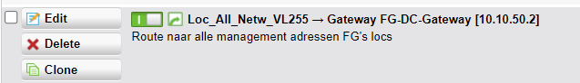

Inrichten nieuwe Fortigate (deel 2 voor migratie locatie)
Inhoudsopgave
- Algemeen
- Voorbereidingen voor Migratie
- Migratie Stappenplan
- Afronding na Migratie
0. Algemeen
Nadat "Inrichten nieuwe Fortigate (deel 1)" is uitgevoerd kan deze handleiding gevolgd worden voor de inrichting van een Fortigate die een Sophos gaat vervangen op een locatie.
Voor de inrichting van een Fortigate voor een nieuwe locatie volg de handleiding "Inrichten nieuwe Fortigate (deel 2 voor nieuwe locatie)"
1. Voorbereidingen voor Migratie
Bijvoorbeeld EDI11-FG01 (DSL en 4G dus wan2 en wan3)
- Edit het device en zet wan3_cidr en wan3_gw goed. Voer het script "3.7 WAN3-Static" uit. (4G is altijd static)
- Edit het device en zet wan2_cidr en wan2_gw goed. De scripts kunnen nog niet gedraaid worden omdat WAN2 nog in gebruik is door de 4G.
- Stel dat de locatie glas heeft dan kan wan1 ook helemaal afgemaakt worden.
- Disable alle Interfaces op de ED11-FG01 die onder Internal 2 hangen.
2. Migratie Stappenplan
Bijvoorbeeld ED11-FG01
- Alle voorbereidingen treffen voor switches en alle devices erachter.
- Plaats ED11-FG01 op doellocatie
- Steek 4G over en sluit eigen laptop aan op poort 6.
- Inloggen op Fortigate en voer handmatig het volgende uit:
Voer de volgende commandos'uit die in 5.1 en 5.2 staan in die volgorde (vul het vestigings id in).
Dit kan niet vanuit de Fortimanager.
config system central-management
set fmg-source-ip 10.255.255.$(vestiging_id)
end
config router static
delete 250
end
Na enige tijd is in de Fortimanager het loopback-adres te zien bij de nieuwe fortigate.
Hierna zou de Fortigate via de Fortimanager bereikbaar moeten zijn.
Extra check : Fortimanager - device - dashboard - cli.
Als er om een wachtwoord gevraagd wordt is het goed.
- Voer het script "3.4 WAN2-Static" of "3.5 WAN2-DHCP" uit. WAN2 DSL omsteken.
- Interfaces weer enabelen en lokale interfaces naar switches overzetten door LAN2 aan te sluiten (uit Sophos halen en in Fortigate stoppen).
3. Afronding na Migratie
Static routes toevoegen op dc-rou01 zodat het verkeer van de dc-fg01 doorgestuurd wordt naar de dc-rou01 :
Er is al een regel voor alle loopback-mgmt-adressen

Per vestiging moet er nog een regel toegevoegd worden voor alle VLAN's:

FW-regels op de DC-Rou01 aanvullen.
Maak op de sum een definitie aan voor alle VLAN's.

Voeg voor alle FW-regels op dc-rou01 waar bijvoorbeeld NWV16 in voorkomt ook die van de nieuwe locatie toe.